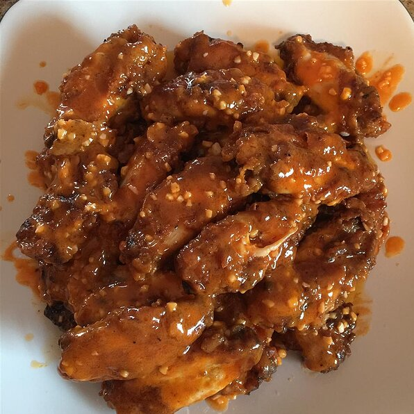

Jeri's Spicy Buffalo Wings

Description
Different layers of flavors create a buffalo wing sauce with a nice bite! Not too hot and not too mild. Serve with ranch or blue cheese dressing.
Ingredients
- 2 pounds chicken wings
- 3 tablespoons apple cider vinegar
- 1 teaspoon garlic salt
- 1 teaspoon paprika
- 1 teaspoon crushed red pepper flakes
- ½ teaspoon onion salt
- ½ teaspoon ground black pepper
- ½ cup all-purpose flour
- 1 cup shortening
- ½ cup butter
- 1 clove garlic, minced
- ½ cup hot pepper sauce, or to taste
Steps
- Toss chicken wings in a large bowl with apple cider vinegar, garlic salt, paprika, red pepper flakes, onion salt, and black pepper to coat; cover bowl with plastic wrap.
- Marinate chicken in refrigerator 1 to 4 hours.
- Scatter flour over the chicken wings; toss to coat. Discard any remaining marinade.
- Preheat oven to 425 degrees F (220 degrees C).
- Heat shortening in a large skillet over medium-high heat; fry chicken in hot shortening until golden, 5 to 7 minutes per side.
- Arrange fried chicken pieces onto a baking sheet.
- Bake chicken in preheated oven until no longer pink at the bone and the juices run clear, about 20 minutes; remove chicken to a platter lined with paper towels to drain.
- Melt butter in a large skillet over medium heat. Cook garlic in melted butter until translucent, about 2 minutes.
- Stir hot sauce into the butter and garlic mixture; reduce heat to low and simmer sauce 5 minutes. Transfer sauce to a large bowl.
- Move drained chicken in batches to the bowl with the sauce and turn to coat. Drizzle any remaining sauce over wings to serve.
Back